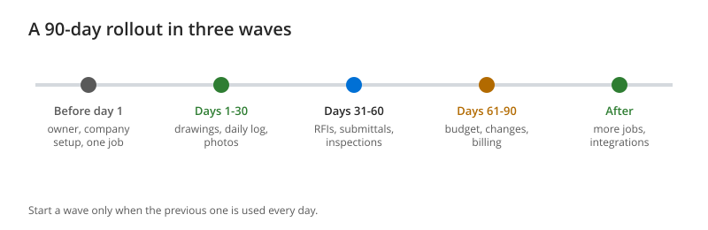

Rolling out Procore in 90 days
In one sentence: roll out in three waves (field record first, then the office logs, then money), and only start the next wave when the previous one is used every day.

Before day 1
- Name the internal owner of Procore.
- Company setup: directory, permission templates, cost codes. See Company setup: directory, permissions and cost codes.
- Pick one live job to start.
Days 1 to 30: the field record
- Drawings and specifications current on every phone. See Drawings and specifications in Procore.
- Daily log every day. See The Daily Log and Caltrans daily reports.
- Photos in the app, in albums. See Photos that hold up later.
- Measure: daily logs completed the same day, percentage of photos in Procore.
Days 31 to 60: the office logs
- RFIs and submittals moved from spreadsheets to Procore. See RFIs in Procore and Submittals in Procore.
- Meetings and correspondence recorded.
- Inspections for two or three key checks.
- Measure: open RFIs and submittals reviewed weekly by ball in court.
Days 61 to 90: money
- Budget by bid item, commitments for subs and suppliers.
- Change events for every potential change.
- Monthly owner invoice built in Procore and reconciled with the RE's estimate.
- Measure: change events opened the day the issue arises.
After 90 days
- Add the second and third jobs with the project template.
- Decide on Timesheets and integrations. See Integrations an electrical GC asks about.
- Retire the old spreadsheets.
Signs it isn't working
- The crew fills logs at the end of the week.
- Spreadsheets still updated "just in case".
- Only one person knows how anything works.
In Procore's own help
Procore Support. Procore's help pages are the reference for how each screen works today.
Common mistakes
- Starting with financial tools before the field record is reliable.
- Rolling out on several jobs at once.
- Keeping the old system running in parallel indefinitely.